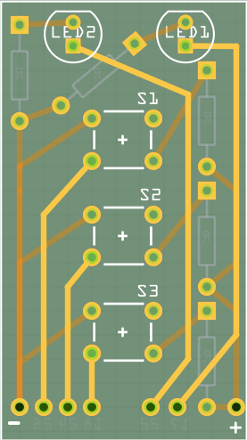
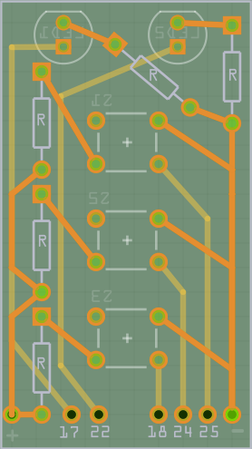

pi-sounds
Overview
- soundboard.py takes input from 3 different buttons which each play a sound and blink 2 LEDs in different patterns.
- droidsounds.py is a modified version I use from an Android SSH app which takes a command line optional parameter -c to indicate that you would like to control the "buttons" via the command line which provides intrusctions at runtime
TODOs
- [] Clean up code into re-usable functions for the different blinkys that take parameters such as Pin#, Light Pattern, Timing ???
- [] Prompt for multiple choice User Input to select the sound-set
- [] Use a rotary encoder to change the sounds played
- [] Make a standalone PCB with ribbon connector to Pi
- [] Make a cool enclosure with powered USB Hub and built-in speaker
Building a Soundboard for my Raspberry Pi with various blinkys
# Input Pin 18 reads a pull-down button that plays a sound and turns on LED on output pin 17
# then turns the light on output pin 17 off after it's done playing
# Input Pin 24 reads a pull-down button that cycles through 4 states to toggle LED patternss on output pins 17 and 22: All Off, 17on/22off, 17off/22on, both on
# Input Pin 25 reads a pull-down button that turns on alternating flashing LEDs (like a siren) on pins 17 and 22 and plays a sound ONLY while button is pressed
# then stops the sound and turns off the lights when released
Breadboard

Custom PCB
 